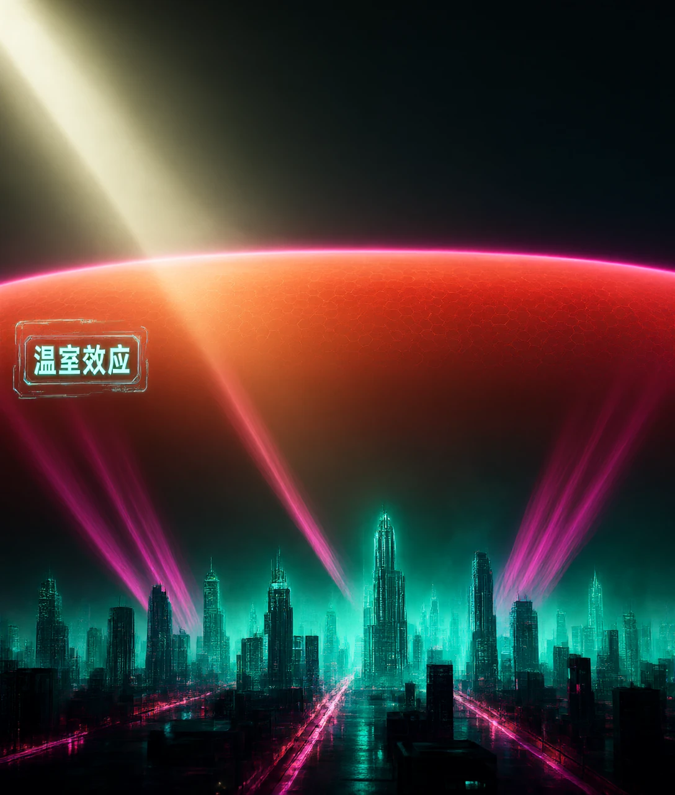
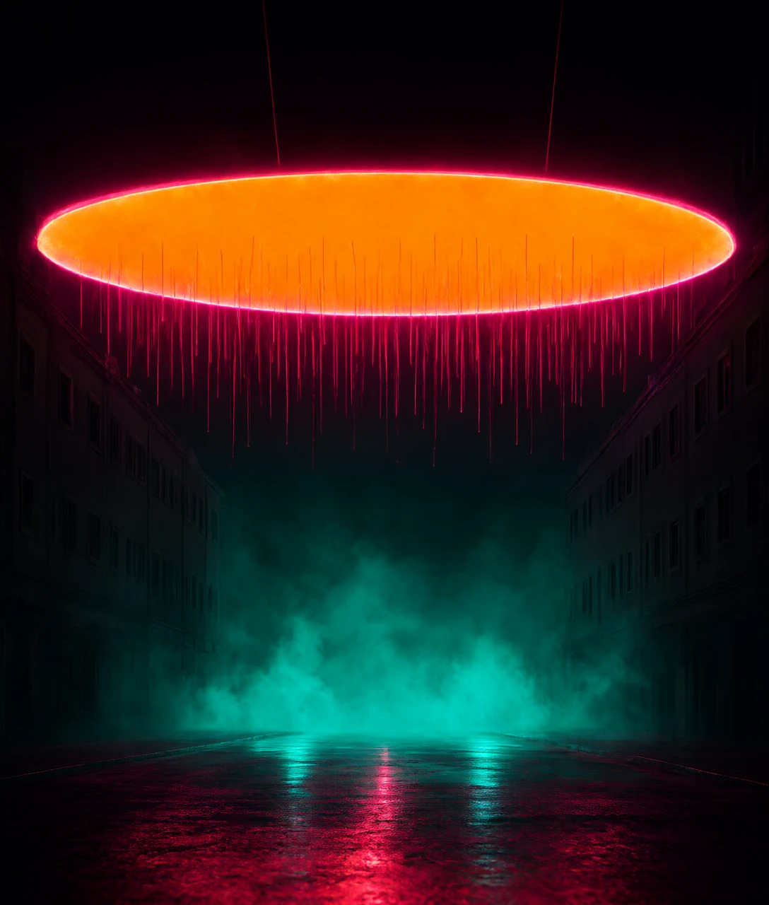
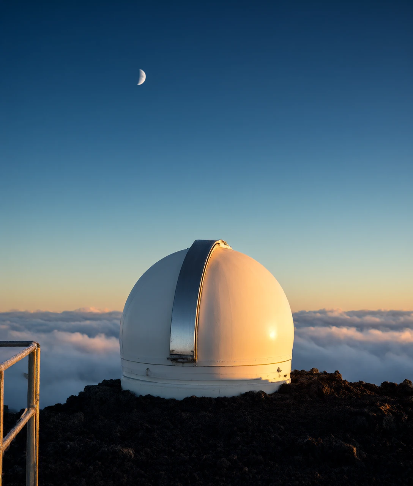

1824 年，傅里叶算完地球的热账，发现它本该比现在冷 33 ℃
夏天中午，一辆车停在太阳底下，车窗全关。两个小时后回来，车里能到 60 ℃ 左右。外面只有 32 ℃。
玻璃挡得住风，挡不住光。阳光穿进车里，把座椅晒热。座椅再把热散出来，变成另一种光。
这种光出不去。于是车里越来越热。地球有点像这辆车。
大气里的某些气体，也在做同一件事。它们放进来一部分光，却留下另一部分。科学家把这个现象叫作温室效应。
这床「被子」值多少度？有一位科学家算过。
1824 年，法国物理学家傅里叶算了一笔账。太阳每年送来多少能量，他能算得很准。
按这个数，地球表面平均应该是 −18 ℃。可实测是 15 ℃ 左右。
差了 33 ℃。
他意识到：问题不在热量进不来，而在热量出不去。
后来的实验，一步步验证了这个想法。1856 年，美国科学家富特做了一个实验。
一瓶普通空气，一瓶二氧化碳，一起放到太阳下晒。装二氧化碳的那瓶，温度升得更高。
三年后，英国物理学家廷德尔用更精密的办法确认：二氧化碳和水汽，会吃掉一部分红外线。
红外线就是比红光更红、眼睛看不见的那种光。它带着热。
所以「玻璃花房」不是一个好比喻。花房挡的是风，地球挡的是热。
更好的比方是盖被子。被子自己不发热，它只是让你散出去的热，跑得慢一点。
那这床被子，盖在哪一层？
关键在一件事：进来的光和出去的光，不是同一种光。
太阳很烫，表面约 5500 ℃。它发出的光里，最强的一段是 0.5 微米。
微米就是长度单位，一毫米的一千分之一。0.5 微米，正好是人眼能看见的光。
地球没那么烫，表面平均 15 ℃。它也在发光，只是发的光很弱。
这段光在 10 微米左右。眼睛看不见，名字叫红外线。

大气对这两种光，态度完全不同。
进来的时候，大气几乎是透明的。氮气占空气 78%，氧气占 21%，它们对太阳光不理不睬。
出去的时候，一部分红外线被拦下了。
拦路的是二氧化碳和水汽。二氧化碳的分子会弯。一弯，两头一正一负。
这个变化，正好对得上红外线的节奏。于是红外线被它吃下来。
水汽也有这个本事，只是管的是另外几个波长。科学家把这些波长叫作吸收带。
打个比方：光要过一扇大门。太阳的光很宽，整扇门都能过。
红外线走的是几条窄缝。二氧化碳正好站在其中一条缝上。
数字能看清这件事。太阳送到大气顶的能量，平均每平方米 340 瓦。
瓦就是功率单位。一支常见的 LED 灯泡是 9 瓦，你可以拿它当尺子。
这 340 瓦里，约 100 瓦被云和地面反射回太空。
剩下 240 瓦被吸收。为了不越积越热，地球必须以红外线的形式，把这 240 瓦再送出去。
麻烦就在这一步。那被拦下的热，后来去哪儿了？
很多人以为，大气把热反射回地面。这个说法不对。
反射像照镜子，光碰到镜面，原样弹回来。红外线被吸收，走的是另一条路。
真实情况是：分子吃下一份红外线，过一会儿，再吐出一份。
吐出的时候，方向是随机的。可能向上，可能向下，也可能斜着。平均算下来，一半向下。

打个比方：退货。不是原路弹回，而是签收之后又寄回来。
所以地面一直在收两份热。一份来自太阳，一份来自天空。
天空那份，平均每平方米 333 瓦。换算一下：差不多等于每平方米挂三盏 100 瓦的灯泡。太阳直接给地面的，只有 161 瓦。
也就是说：地面收到的一大半热，是从天上来的。
这也解释了阴天的夜里为什么没那么冷——云也在往下还热。
还有一层。地面附近一两公里的空气又厚又湿，红外线走不了多远就被吃掉。
真正能把热直接送进太空的，是 5 到 6 公里高处那一层稀薄的空气。
下面这层空气，就叫作对流层。就是贴地那一层，从地面往上约 12 公里。
天气基本都发生在这里。
它有个规律：越往上越冷。平均每升高 1 公里，温度降 6.5 ℃。
打个比方：这层空气像烟囱口。口子越高，越冷，散热越费劲。
二氧化碳变多，散热的口子被推得更高、更冷。地面只好再热一点，才能把同样多的热送出去。
可二氧化碳只占空气的万分之四。这么少，够用吗？
1958 年，科学家基林在夏威夷的冒纳罗亚山顶，开始天天量空气里的二氧化碳。
当时是 315 ppm。ppm 就是「一百万个里面有几个」。
2025 年 5 月，同一个山顶的数，第一次超过 430 ppm。
打个比方：一个坐满一万人的体育场，里面只有 4 个人。
少得可怜。但这 4 个人，都站在门口堵热。
为什么这么少还管用？三个原因。
第一，门的中间早就堵死了。
15 微米那条缝的中心，在工业革命之前就快吸满了。科学家把这个叫作饱和。
再加二氧化碳，中心也不会多吸。真正还能吸的，是缝的两边。
浓度就是一百万个空气分子里，有几个是二氧化碳。浓度越高，缝的两边被吃掉得越多。就像一扇慢慢关紧的门。
第二，效果是对数的，不是翻一倍就多一倍。
二氧化碳翻一倍，多留住的热约 3.7 瓦每平方米。
换算一下：差不多等于每平方米多开半盏 LED 灯，一直开着。
第三，水汽会帮忙。它是所有能保温的气体里，贡献最大的一个，占整个温室效应的一半左右。
二氧化碳约占 20%，云约占 25%，剩下的是甲烷、氧化亚氮和臭氧。
但水汽不会自己越积越多。它平均只在大气里待 9 天，就变成雨落下来。
温度升高，空气装水的能力变强。每升 1 ℃，大约多装 7%。
水汽变多，又更保温。这就叫正反馈。
正反馈不等于失控。相对湿度大体稳定，水汽是跟着温度走的。
既然地球盖着被子，为什么金星成了 464 ℃ 的火炉？
金星的大气，96% 是二氧化碳。地表约 464 ℃，大气压是地球的 92 倍。
大气压就是空气压在地面上的重量，越大说明空气越厚。
看上去，这是「二氧化碳多就热」的铁证。但要看总量。
金星大气里的二氧化碳，约为地球的 15 万倍。
它的热，不只来自成分，更来自数量。再加上失控逃逸的水汽和硫酸云，它走上了另一条路。
火星的大气，95% 也是二氧化碳。可它的气压只有 6 毫巴。
毫巴就是气压单位，地球海平面约 1013 毫巴。火星不到地球的百分之一。
所以火星的温室效应，只多给了约 5 ℃。
决定温度的不是比例，而是每平方米上面压着多少气体。这个量，就叫作柱密度。

回到地球。这 33 ℃ 不是坏事。没有它，地表平均 −18 ℃，海洋会冻住。
变的是速度。末次冰期结束到工业革命前，地球用一万年才升了 4 到 5 ℃。
从 1850 年到现在，170 年升了约 1.3 ℃。
这个速度会带来什么？方向大家一致，细节还有分歧。
二氧化碳翻一倍，最后会热多少？2021 年各国科学家的联合报告给了个数：2.5 到 4 ℃，最可能 3 ℃。
这个范围还不确定，卡在云上。低云挡阳光，变凉；高云像被子，变暖。
两者相抵，净效果偏哪边，目前尚无定论。
还有人想更直接的办法：往太空放遮阳膜，或往高空撒颗粒，挡掉一点阳光。
这类方案物理上可行。但代价是同时改掉季风和降水。相当于给地球撑一把伞，伞下的风和雨也跟着变了。
而且一停手，温度几年内就会弹回来。这不是能随手反悔的开关。
基林曲线还在往上走。山顶的仪器，每天还在记录。
那这床被子，人类能不能只留下好的那一半？
按太阳送来的能量算，地球表面本该比现在冷多少？
D 解析：算出来是 −18 ℃，实测约 15 ℃，差 33 ℃。这份差额就是温室效应做的功。
大气里哪些气体最容易拦住往外走的红外线？
B 解析：氮气氧气对称，振动时不带正负电；二氧化碳和水汽的振动节奏正好落在红外波段。
二氧化碳吸收红外线之后，这份能量去了哪里？
A 解析：吸收后很快再发射，方向随机，一半朝下。所以它增加的是天上还给地面的热，不是反射。
为什么只增加一点二氧化碳，也能让地表更暖？
C 解析：15 微米的中心早就饱和，起作用的是缝的两边。两边每加深一点，都还能量化成瓦每平方米。
火星二氧化碳占 95%，为什么反而比地球冷？
B 解析：火星气压只有 6 毫巴，同样一平方米上压着的气体少得多，温室效应只贡献约 5 ℃。